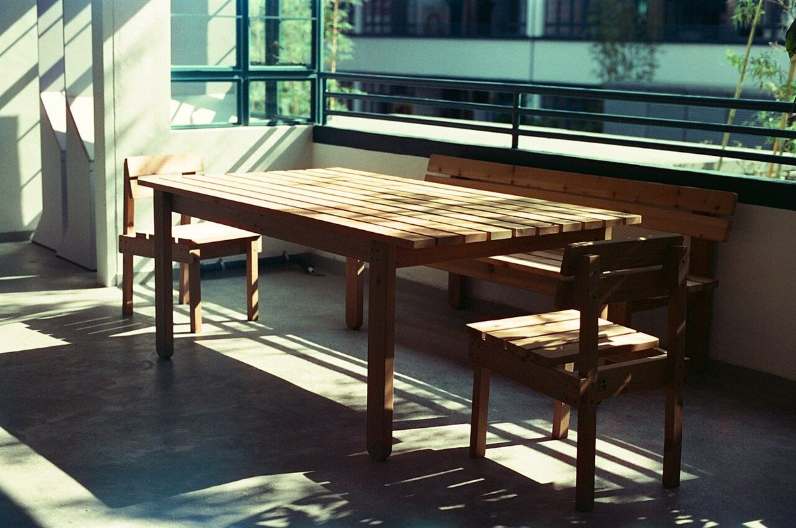
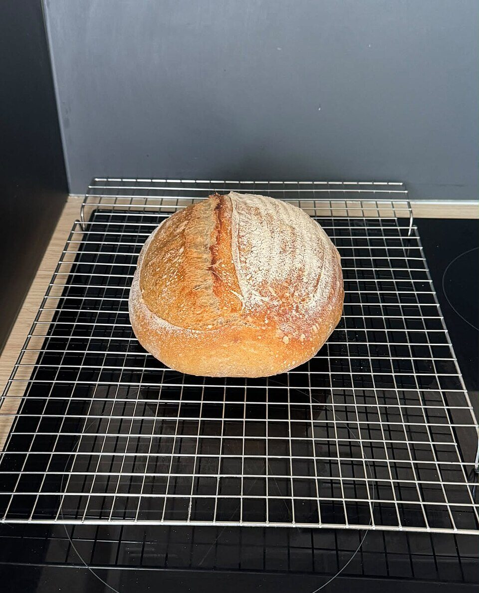

制作側の連想
分光器の部位を、配置図にしてみる
このサイトは、光を波長ごとに分けて測る装置・分光器を図にしたつもりで作りました。六つの部位に番号をふり、各ページの番号と並べています。制作側の連想で、お店の理念・由来とは無関係です。実際の装置の仕様を示すものではありません。
凡例
六つの部位
- 1光源測りたい光を出す、いちばんはじめの部分。
- 2入射スリット光を細い線の幅にしぼって、装置へ入れる狭い隙間。
- 3コリメーター広がる光を、そろった平行な光にまっすぐ整えるレンズ。
- 4回折格子細かい溝が並び、光を波長ごとの向きに分ける板。
- 5検出器分かれた光を受けとり、強さを電気の信号にかえる部分。
- 6表示部測った結果を、グラフや数字にして見せる画面。
写真(イメージ)
パンと豆の写真



写真はイメージです。お店のものではありません。
ご案内
お店のこと(確認できたものだけ)
| 所在地 | 〒833-0041 福岡県筑後市和泉173-10 |
|---|---|
| 電話 | 準備中 |
| 営業時間 | 準備中 |
| 定休日 | 準備中 |
| ご予約 | 準備中 |
| 駐車場 | 準備中 |
| SNS | Instagram @nanakura779 |